ヘルスケアからランとサイクリングを取り込み
どのアプリで記録した有酸素運動も、ルートマップ、ペース、心拍ゾーン付きで表示されます。
iPhone & Apple Watchのための筋トレアプリ
全セットを数秒で記録し、自己ベストをすべて確認。1週間のプランはAIコーチが組み立てます。Replexなら、トレーニングが目に見える成長に変わります。
無料で始められます。ProならAIコーチ、自分だけのプラン、すべての履歴が使えます。
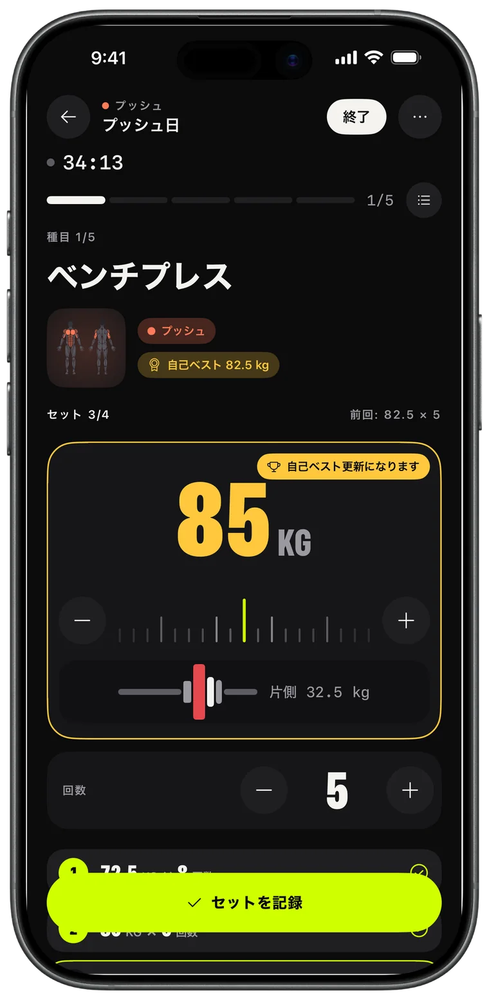
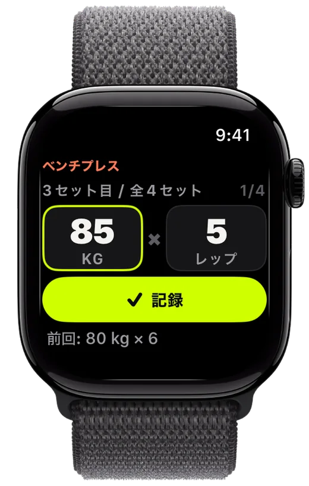
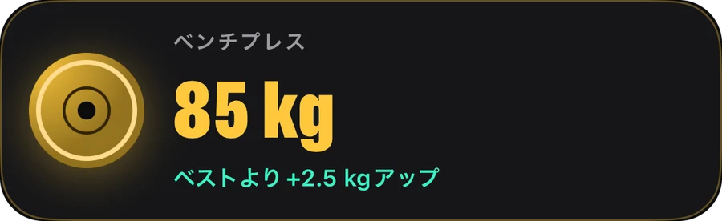
記録
プレートを合わせ、セットを記録し、前回を超える。Replexは挙げた重量を覚えていて、あなたより先に次のセットを準備します。
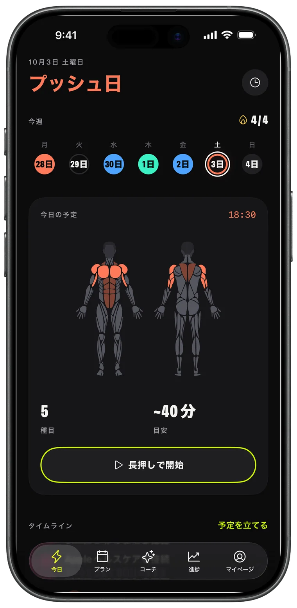
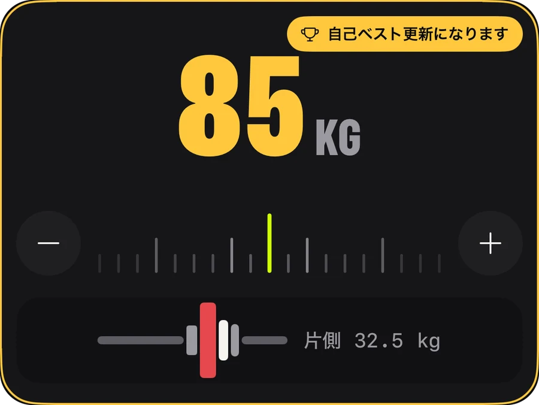
Apple Watch
iPhoneはバッグに入れたままでOK。Digital Crownを回して重量と回数を合わせ、「記録」をタップ。iPhoneにもリアルタイムで反映されます。
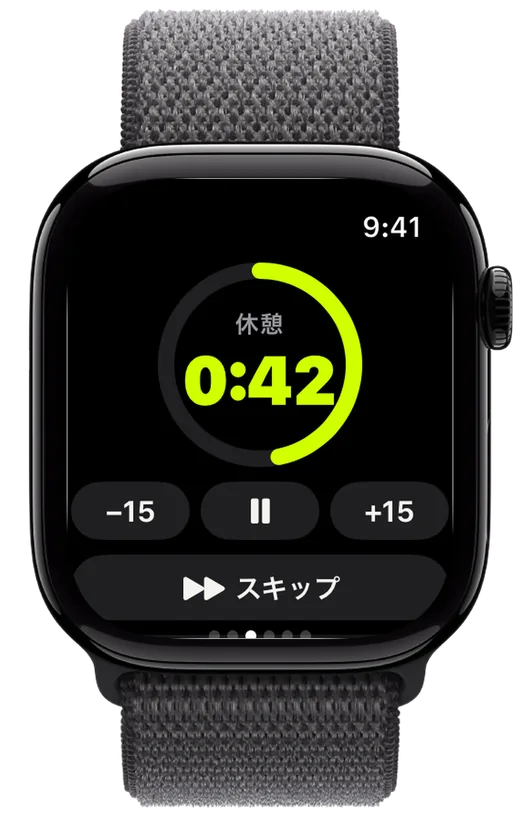
進捗
週ごとに伸びるボリューム、更新したすべての自己ベスト、種目ごとの推移。努力が実を結んでいることがわかります。
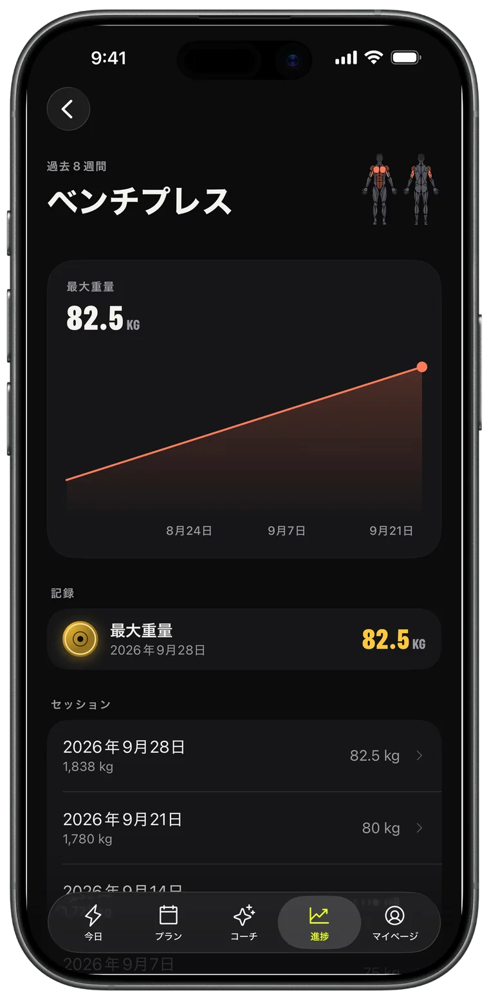
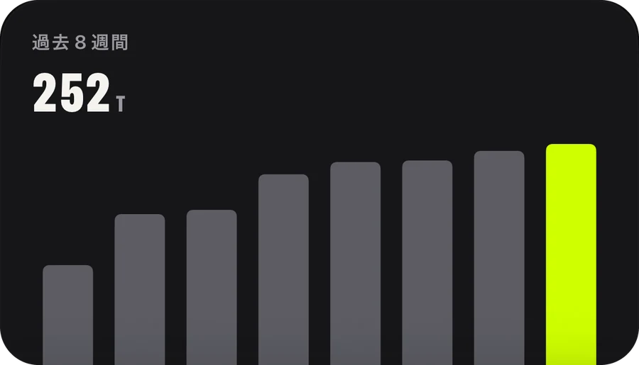
AIコーチ · Pro
1週間を頼めば、カレンダーに入ります。コーチはセッション、自己ベスト、ランニングなど実際のトレーニングを読み取り、それに合わせてプランを組みます。
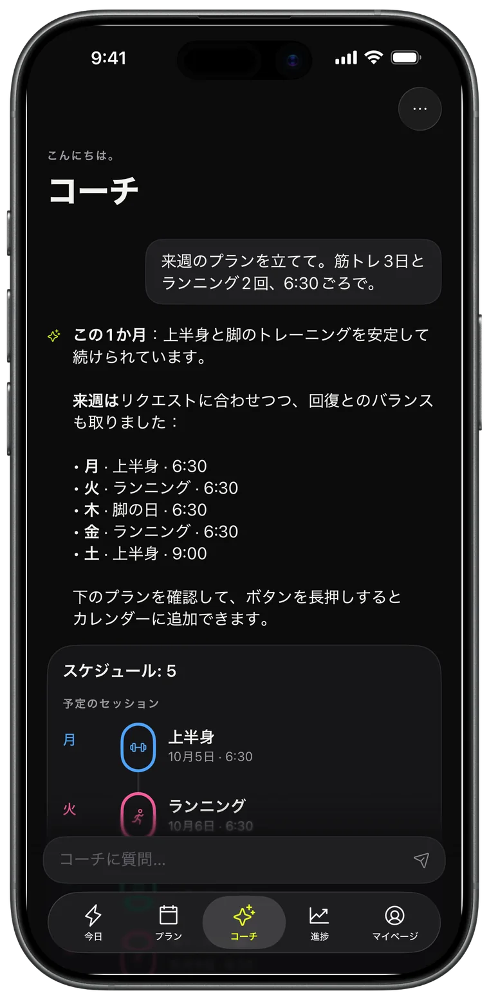
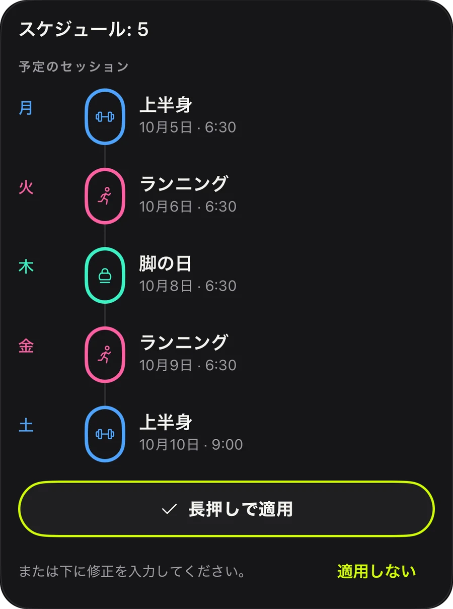
プラン
プッシュ、プル、脚、上半身/下半身、全身。今日から始められる44の既成プランから選ぶか、自分で作って繰り返し使えます。
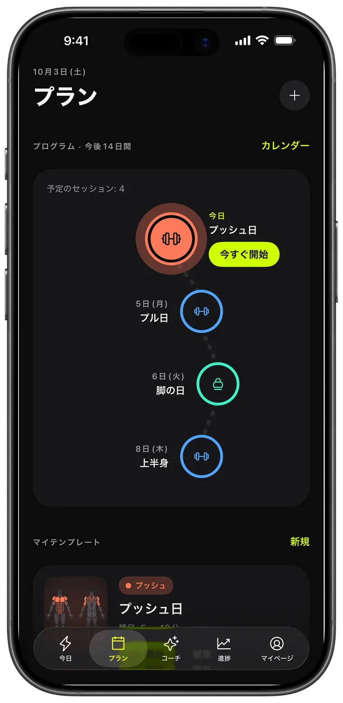
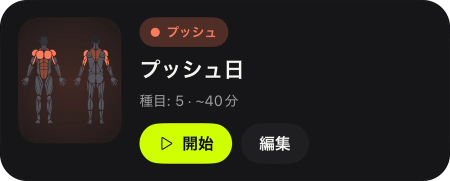
シェア
終えたワークアウトはすべて、ボリューム、時間、自己ベストが入ったストーリーカードに。投稿するもよし、証として残すもよし。
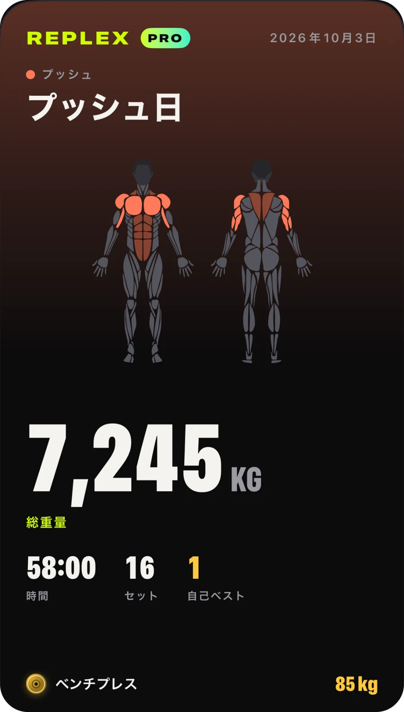
どのアプリで記録した有酸素運動も、ルートマップ、ペース、心拍ゾーン付きで表示されます。
セット、休憩、心拍数をロック画面とDynamic Islandに表示。
ワークアウト、テンプレート、プランをすべてのデバイスで。データはあなただけのものです。
始める前にそのセッションで鍛える部位を、今週どこを鍛えたかも確認できます。
キログラム、ポンド、ストーンに対応。自重種目や時間で計る種目も標準搭載。
ライトまたはダーク、3つのアクセントカラー（Volt、ブルー、ピンク）と、それぞれに合うアプリアイコン。
記録して成長するのに必要なすべて。
先を見据えて計画するトレーニーに。
Proはアプリ内で、月額、年額、または1回限りの買い切りで購入できます。サブスクリプションはAppleアカウントからいつでも解約できます。
Replexをダウンロードして、1分以内に最初のワークアウトを記録しましょう。
いいえ。ReplexはiPhoneだけですべての機能が使えます。Apple Watchがあれば、手首からセットの記録、休憩タイマー、心拍数の計測ができます。
はい。記録、休憩タイマー、5つの自重プラン、直近のセッションの自己ベスト、Apple Watchのワークアウト5回は無料で使えます。Replex Pro（月額、年額、または1回限りの買い切り）では、AIコーチ、44のプランすべて、自分のテンプレートとスケジュール、すべての履歴、Apple Watchのワークアウト無制限が加わります。
あなたのデバイスと、あなた専用のiCloudに保存されます。ワークアウトはヘルスケアにも保存できます。AIコーチが参照するのは、あなたが質問したときに、回答に必要な情報だけです。
はい。キログラム、ポンド、ストーンから選べ、プレート計算も選んだ単位に合わせて表示されます。
日本語、英語、スペイン語、ポルトガル語、フランス語、ドイツ語、韓国語、中国語、アラビア語、ヘブライ語など、54の言語に対応しています。